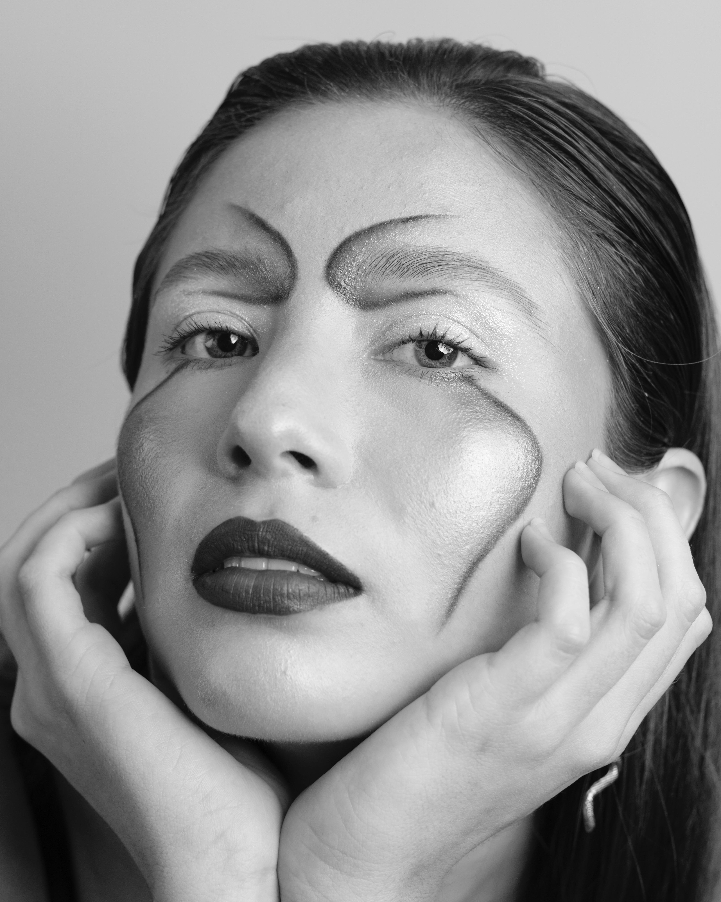

Know more about me
SKILLSI have a lot of experience in the field of dance, also I had a diploma in Photography but also I have a diploma and also experience as a Make Up Artist working in different projects as shortfilms and events.
I have a lot of experience in the field of dance, also I had a diploma in Photography but also I have a diploma and also experience as a Make Up Artist working in different projects as shortfilms and events.